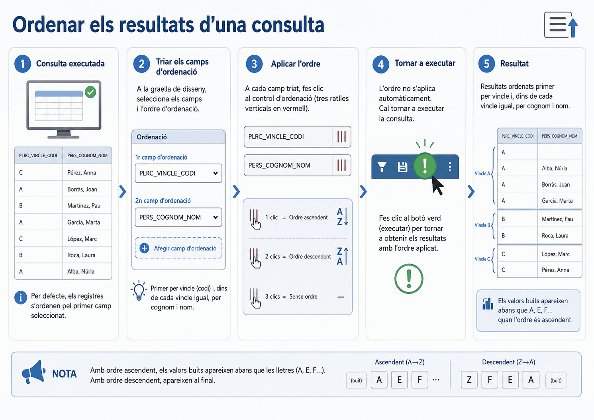
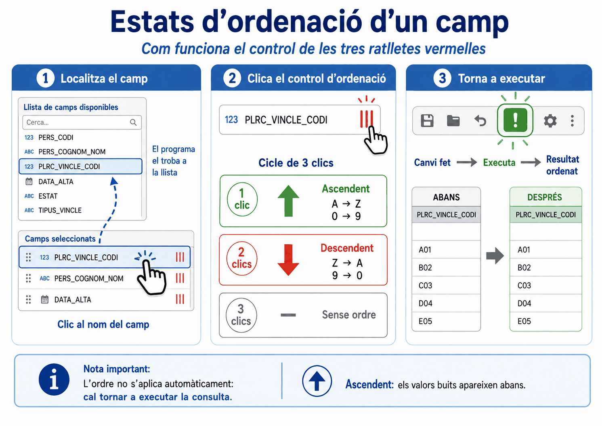
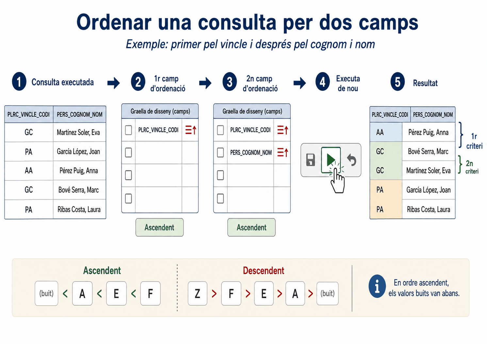
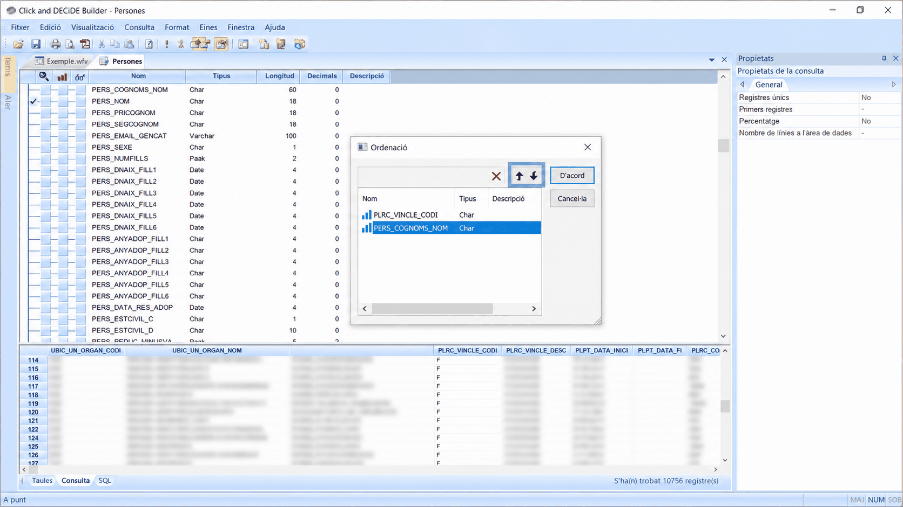
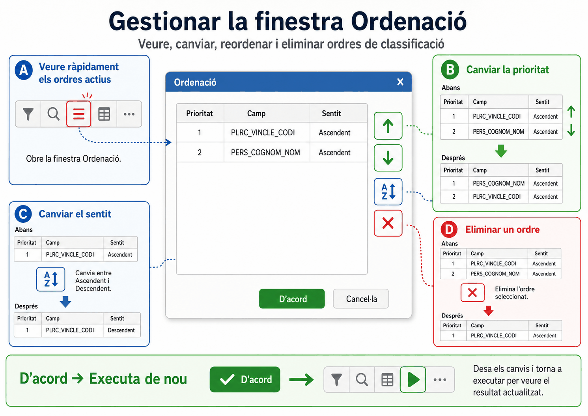
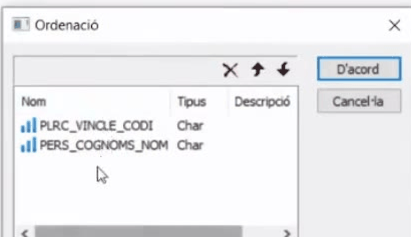

Apartat 1L'ordre per defecte
Quan executeu una consulta sense haver dit res sobre l'ordre, els registres surten ordenats pel primer camp que vau afegir. No és aleatori, però tampoc és una decisió vostra: és una conseqüència de l'ordre en què vau anar fent clic a les ulleres.
Sovint voleu una altra cosa. Per exemple, agrupar primer per tipus de vincle i, dins de cada vincle, tenir les persones per ordre alfabètic.

Apartat 2Localitzar el camp
L'ordenació no s'aplica des de la graella de resultats, sinó des de la llista de camps, al panell superior esquerre. En una taula de la WAI aquesta llista és llarguíssima, i buscar-hi a mà és el primer obstacle.
Feu clic a la capçalera de la columna a la graella de resultats de sota. El programa busca i marca automàticament aquell camp a la llista de dalt. És el mateix truc que farem servir a la unitat 6 per als criteris, i val la pena convertir-lo en costum des d'ara.
El camí curt: si el camp ja és a la graella de resultats, feu clic a sobre del seu títol i el programa el localitza tot sol a la llista de camps. En una taula amb centenars de camps, és la diferència entre trobar-lo de seguida i buscar-lo a mà.
Apartat 3Els tres estats del camp
Un cop localitzat el camp, es fa clic a la casella corresponent a la columna de les tres ratlles vermelles verticals. Cada clic canvia l'estat, i el cicle és de tres:
| Clics | Estat | Resultat |
|---|---|---|
| 1 | Ascendent | De la A a la Z, del 0 al 9, de la data més antiga a la més recent. |
| 2 | Descendent | De la Z a la A, del 9 al 0, de la data més recent a la més antiga. |
| 3 | Sense ordre | La icona desapareix i el camp deixa d'intervenir en l'ordenació. |

Els canvis d'ordre no es veuen en temps real. Sempre cal prémer Executar per veure el resultat reordenat. Si canvieu l'ordre i la graella us surt igual, gairebé segur que no heu tornat a executar.
Apartat 4Ordenar per diversos camps
Es poden establir diversos nivells d'ordenació. I aquí hi ha la regla que cal entendre:
La prioritat depèn de l'ordre en què establiu els criteris, no de la posició de les columnes ni de l'ordre de la llista de camps. El primer camp que marqueu mana sobre el segon.
Exemple: vincle i després nom
Volem agrupar per codi de vincle laboral i, dins de cada vincle, ordenar les persones alfabèticament.
-
Primer, el camp que ha de manar
Busqueu
PLRC_VINCLE_CODIi feu-hi un clic: ascendent. -
Després, el camp subordinat
Busqueu
PERS_COGNOMS_NOMi feu-hi un clic: ascendent. -
Executeu
El sistema agrupa primer pels codis de vincle i, allà on coincideixen, ordena els noms alfabèticament.

Compte amb els valors en blanc: en ordre ascendent surten primers, abans que les A. Si ordeneu per un camp que molts registres no tenen informat, el principi del llistat seran files buides, i això no vol dir que la consulta estigui malament.
Apartat 5La finestra Ordenació
Aquest apartat és el que separa qui fa servir el programa de qui el domina. Quan obriu una consulta que vau desar fa mesos, no teniu manera de recordar quins ordres té aplicats: les icones estan repartides per una llista de centenars de camps.
S'obre la finestra Ordenació, que mostra la llista de tots els camps que tenen ordre aplicat, en ordre de prioritat. D'un cop d'ull sabeu com s'ordena la consulta.


Des d'aquí podeu fer tres coses:
Canviar la prioritat
Seleccioneu un camp i feu servir les fletxes de la finestra per pujar-lo o baixar-lo dins de la jerarquia. Així podeu decidir que el nom mani sobre el vincle sense desfer res.
Canviar el sentit
Fent clic sobre la icona s'alterna entre ascendent i descendent, sense haver de tornar a la llista de camps.
Eliminar un criteri
Seleccioneu el camp i premeu el botó de suprimir objecte. Més segur que buscar-lo a la llista i fer-hi tres clics.
En prémer D'acord la finestra es tanca i els canvis queden guardats, però la graella encara mostra el resultat anterior. Cal tornar a executar perquè es vegin.

Apartat 6Ordenar sense mostrar
Un camp pot intervenir en l'ordenació sense aparèixer a la graella. És el camp ocult que vam veure a la unitat 4.
El cas típic: ordenar pel codi del departament, que és el que dóna l'ordre correcte, i mostrar-ne només la descripció, que és el que la gent entén. Sense camps ocults hauríeu d'ensenyar les dues columnes.
Apartat 7Errors freqüents
El que passa
Canvio l'ordre i no passa res.
La llista surt alfabètica però els vincles estan barrejats.
Ordena per una cosa que jo no he demanat.
Volia treure l'ordre i ara està del revés.
El que passa de veritat
No heu tornat a executar. Passa a totes les unitats.
Heu marcat el nom abans que el vincle. Reordeneu la prioritat des de la finestra Ordenació.
És l'ordre per defecte pel primer camp afegit, o un criteri antic. Obriu la finestra Ordenació i mireu-ho.
Us heu quedat al segon clic, que és descendent. Un clic més i desapareix.
Apartat 8Exercicis
Dos nivells d'ordre
Reprodueix
Partiu de la consulta Persones de la unitat 4. Ordeneu-la
perquè surti agrupada per codi de vincle i, dins de cada grup, per
cognoms i nom, tots dos ascendents.
Anoteu quin és el primer registre de la graella.
Pista
L'ordre en què feu els clics és la prioritat. Si voleu que mani el vincle, marqueu-lo primer. I recordeu que per trobar el camp només cal fer clic a la capçalera de la columna a la graella.
Comprovació
Obriu la finestra Ordenació fent clic a la capçalera de la columna vermella. Hi han de sortir exactament dos camps, i el vincle ha d'estar per damunt del nom. Si hi surt algun camp més, teniu un ordre antic posat sense voler.
Inverteix la prioritat
TrencaSense tocar la llista de camps, feu que ara mani el nom sobre el vincle. Executeu i compareu les dues graelles.
- Quantes files té cada versió?
- Per què no serveix la segona per fer un recompte per vincle?
Què hauria d'haver passat
1. Les mateixes files. L'ordenació no filtra res: no canvia mai el nombre de registres. Si us canvia, heu tocat un criteri sense voler.
2. Perquè amb el nom manant, els vincles queden escampats per tota la llista i ja no es poden comptar visualment per blocs. Aquesta és la diferència entre ordenar i agrupar, i és la porta a la unitat 10.
Es fa des de la finestra Ordenació amb les fletxes, sense desfer cap clic.
La consulta heretada
ResolUn company us passa una consulta que surt ordenada de manera estranya i no recorda què hi va tocar. Us demana que la deixeu ordenada només per data d'ingrés, de la més recent a la més antiga.
Com ho feu sense anar camp per camp per tota la llista?
Solució
- Clic a la capçalera de la columna de les tres ratlles vermelles. S'obre Ordenació amb tot el que hi ha aplicat.
- Seleccioneu cada camp que hi sobri i premeu suprimir, fins que la llista quedi buida.
- Localitzeu la data d'ingrés i feu-hi dos clics: descendent, perquè volen la més recent a dalt.
- Executeu.
Fer-ho des de la llista de camps voldria dir trobar cada camp afectat, i no sabeu quins són. Aquesta finestra és l'única manera de saber-ho.
Apartat 9Llista de comprovació
- Explicar per què una consulta surt ordenada sense haver demanat res.
- Trobar un camp a la llista fent clic a la capçalera de la columna.
- Aplicar ordre ascendent, descendent i treure'l, sabent quants clics calen.
- Ordenar per dos camps i controlar quin dels dos mana.
- Obrir la finestra Ordenació i llegir-hi tota l'ordenació aplicada.
- Canviar la prioritat, el sentit i eliminar un criteri des d'aquella finestra.
- Ordenar per un camp sense mostrar-lo.
- Recordar que cal executar perquè es vegi qualsevol canvi.
Fins ara treballem amb tots els registres de la taula. La unitat 6 és la frontissa del curs: els criteris de selecció. Allà apareix la regla d'or de filtrar per codi i no per descripció, i el detall de l'operador És nul que explicarà mitja unitat 18.